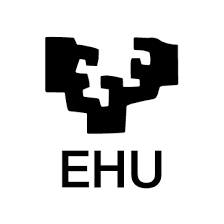
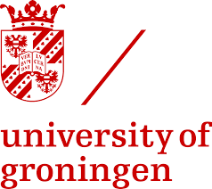
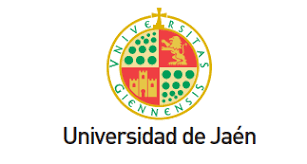
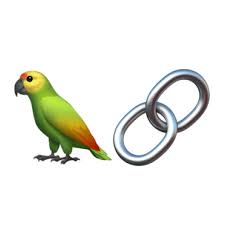
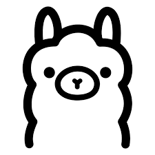
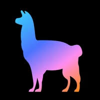
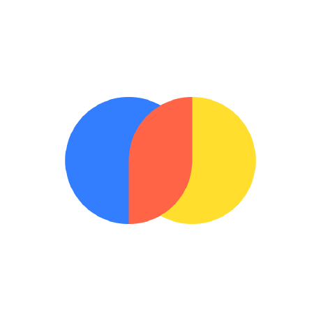
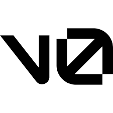

Hi, I'm
María Teresa Muñoz Martín
I build intelligent systems for language understanding.
A passionate Computer Engineer specializing in Natural Language Processing. I tend to make use of AI carefully, embracing Green AI principles and ethical practices, to build systems that work great, feel intuitive, and respect both users and the planet.
Work Experience
Machine Learning Researcher — ALIA Project
SINAI Research Group, University of Jaén
Jan 2026 – Present
- Spanish Government strategic initiative for sovereign Spanish LLMs.
- Engineered multi-million-token Spanish corpus-curation pipelines for retrieval-augmented LLM training.
- Contributing to RomaNET (European Commission): multilingual NLP pipelines for hate-speech detection targeting anti-Roma discourse.
- Building a web platform for LLM-driven counter-narrative generation against antigypsyism with KAMIRA.
- Defined model-evaluation protocols aligned with EU AI Act transparency requirements.
LLM Researcher — Investigo Programme (NextGenerationEU)
HITZ Center for Language Technology, University of Basque Country
Nov 2024 – Oct 2025
- Designed and benchmarked a Parameter-Efficient Fine-Tuning protocol for Basque LLMs (QLoRA vs LoRA-Q).
- Evaluated Gemma-2-9B, Qwen-3-8B, and Latxa-3.1-8B; established NF4 with Double Quantization as the most robust configuration.
- Achieved >50% VRAM reduction, enabling 8B-parameter LLMs on consumer-grade GPUs (RTX 3090/4090).

Research Assistant — Initiation to Research Grant
SINAI Research Group, University of Jaén
Sep 2023 – May 2024
- Studied and implemented early RAG pipelines with FAISS, Sentence-BERT, and prompt-constrained generation over GPT-3.5 and LLaMA-2.
NLP Research Intern — Ícaro Programme
SINAI Research Group, University of Jaén
Oct 2023 – Mar 2024
- Applied research in NLP/ML; supported retrieval-augmented systems and corpus-engineering pipelines.
Education


Erasmus Mundus M.Sc. — Language & Communication Technologies
University of Basque Country (EHU) & University of Groningen (RUG)
2024 – 2026
Erasmus Mundus Scholar. Thesis: QLoRA vs LoRA-Q Pipelines for Basque: a Multi-Model Efficiency Analysis.

B.Sc. in Computer Engineering
University of Jaén (UJA)
2020 – 2024
GPA: 8.22 / 10
Erasmus+ exchange at KTU, Lithuania (2023–24). Thesis: BoTCA: RAG chatbot for eating-disorder prevention. Grade: 9.8/10
Technological Baccalaureate
IES Santa Catalina de Alejandría, Jaén
2018 – 2020
Erasmus+ Rome 2019 — 1 of 2 students selected from 150 candidates.
Technical Skills
Programming
 Python
Python SQL / MySQL
SQL / MySQL C / C++
C / C++ Java
JavaLLM & GenAI
 PyTorch
PyTorch
LangChain LangGraph
LangGraph HuggingFace Hub
HuggingFace Hub
Ollama
LlamaIndexRAG & Retrieval

ChromaDB W&B
W&BFrameworks
 FastAPI
FastAPI React / Next.js
React / Next.jsInfrastructure & MLOps
 GitHub Actions
GitHub Actions
VercelNLP Tasks
Publications & Research
Sylloscope at SemEval-2026 Task 11
SemEval-2026 Workshop Task 11, co-located with ACL 2026
Designed a novel pipeline combining DeepSeek-enhanced knowledge distillation with Qwen models to decouple logical reasoning from belief-based inference in stereotyped-claim detection. Achieved 96.86% accuracy on Subtask 1 and 91.67% on Subtask 3.
Weekend Projects
Gender Gap in Open-Source AI
Full-stack data platform measuring gender representation in open-source AI: surfaced 5% women in the top 500 GitHub accounts and 7.4% across contributors to 20 major AI repositories (PyTorch, Transformers, LangChain, JAX, etc.). Built a tiered, fully offline gender-inference pipeline with no third-party gender-API calls.
PergamIA — Multi-tenant Corporate RAG System
Production-grade multi-tenant RAG with RBAC: hybrid search (BM25 + dense, RRF fusion), cross-encoder re-ranking, query rewriting, streaming, RAGAS evaluation and per-query audit logs.
Certifications
LangChain — Introduction to LangGraph (Python)

Microsoft — Applied Skills: Create a Generative AI Chat App
Hugging Face — Agents Course
Anthropic — AI Fluency: Framework & Foundations

Anthropic — Claude Code in Action
Anthropic — Introduction to Model Context Protocol (MCP)